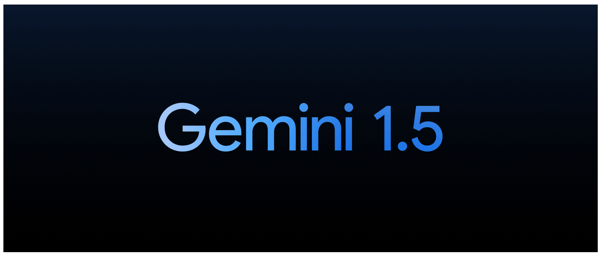
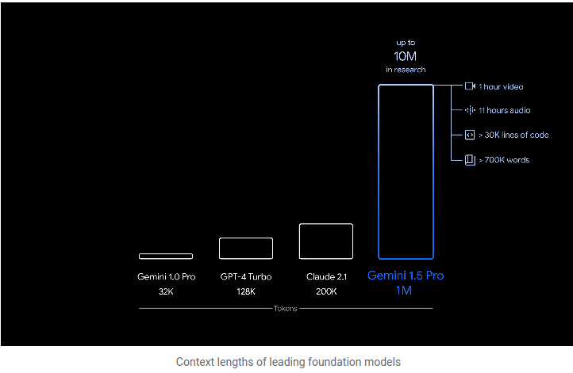
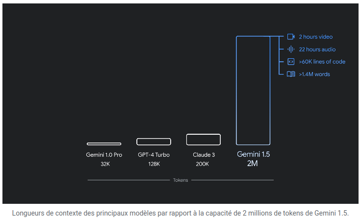

Présentation
{kind=link}
- Introduction (éteinte)
Les outils d'intelligence artificielle (IA) sont en train de transformer divers secteurs en automatisant des tâches complexes, en fournissant des analyses précises et en améliorant la prise de décision. Dans cette documentation, nous allons discuter de deux outils d'IA avancés : Gemini 1.5 et ChatGPT.
 Gemini 1.5 est une plateforme d'IA conçue pour offrir des solutions avancées dans divers domaines. Elle intègre des algorithmes sophistiqués pour analyser de grandes quantités de données et fournir des résultats précis et exploitables. Que ce soit pour des applications commerciales, des recherches scientifiques ou des analyses de données, Gemini 1.5 est un outil polyvalent et puissant :
Caractéristique version 15 Fev 2024 : Caractéristique version 14 Mai, 2024 : Démo en deux parties de Project Astra, notre vision pour l'avenir des assistants IA. Chaque partie a été capturée en une seule prise, en temps réel.Voir ICI
{kind=link}
{kind=link}
{kind=link}
Voici quelques exemples d'utilisation de Gemini 1.5 :
- Exemple 1
- Exemple 2
- Exemple 3
- Caractéristique 1
- Caractéristique 2
- Caractéristique 3
- Exemple 1
- Exemple 2
- Exemple 3
- aaaaaa
Introduction
ChatGPT, développé par OpenAI, est un modèle de langage basé sur l'architecture GPT-3.5. Il est capable de comprendre et de générer du texte de manière naturelle et cohérente. ChatGPT est utilisé dans une variété d'applications, allant des assistants virtuels à la génération de contenu en passant par la création de dialogues interactifs.
Caractéristiques
Utilisations Pratiques
ChatGPT peut être utilisé pour...
Exemples
Voici quelques exemples d'utilisation de ChatGPT :